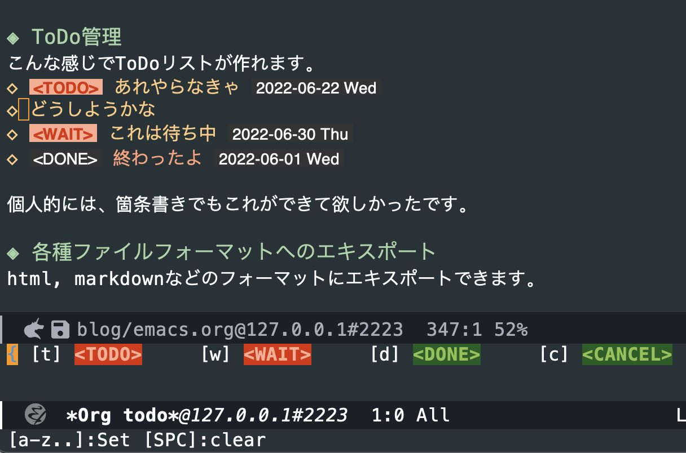

Table of Contents
- 1. はじめに
- 2. そもそもemacsって・・・
- 3. 使っている機能とconfig
- 4. init.el
1. はじめに
業務効率を上げるために、emacsの使いこなしに注力しています。元々org-modeによるドキュメント書きやPythonスクリプト開発にしか使っていなかったのですが、この1年くらいで、以下の機能、パッケージを使うようになり、40年前からあるツールとは思えないくらい使い勝手が向上しました。
- use-package
- magit
- vertico + orderless + marginalia + consult
- GUIモード
- tramp-mode
- dired
- org-modeでのToDos管理
2. そもそもemacsって・・・
先日発表された、stackoverflow の2022年版 IDEランキング(こちら)で、emacsはCLion, Riderに次ぐ20位でした。
| rank | IDE | コメント |
|---|---|---|
| 1 | Visual Studio Code | 納得です |
| 2 | Visual Studio | |
| 3 | IntelliJ | これも納得 |
| 4 | Notepad++ | |
| 5 | Vim | おー、さすが |
| <snip> | ||
| 13 | Nano | なぜNanoがIDE.. |
| <snip> | ||
| 20 | Emacs |
職場でも、VS Code, IntelliJ, vimを使っている人が大半で、唯一のemacs使いは転職してgoogleに行ってしまいました。私も自分でコーディングしない言語のソースコードを見るときにはVS Codeを使っていて、自分で管理していないLinuxマシン上ではvi/vimを使います。
ランキングを見ると、emacsのライバルである筈のvimに大きく差をつけられているのが寂しい所です。世間的にはemacsはオワコンカテゴリーに入ってしまったのですね。
確かにemacsは初心者を突き放したようなところがあって、ツールとして使いこなすまでのアップフロントな学習コストが高めなため、インストールするだけで何となく使えてしまうVS Codeに人気で負けてしまうのは納得できます。
しかしある一線を越えると、非常に生産性の高い唯一無二の世界が待っていますので、少しでも興味があって、勉強や試行錯誤してもよいという方は是非ともemacsを使っていただきたいと思います。
リンク:
3. 使っている機能とconfig
3.1. use-package
emacsの追加機能(パッケージ)は ~/.emacs.d/init.el で設定しますが、これを見やすく、書きやすくするありがたいパッケージです。パッケージの自動インストールもしてくれます(私の環境では動かないことも多いですが)。
パッケージのgithub READMEには、use-packageを使った設定の説明が増えてきていて、多くのemacsユーザーに浸透しています。日本ではより高機能な leaf が有名ですね。
;; for use-package (unless (package-installed-p 'use-package) (package-install 'use-package)) (require 'use-package) (setq use-package-always-ensure t)
3.2. materialテーマ と doomモードライン
テーマは好き嫌いがあると思いますが、私はmaterialテーマを好んで使っています。
doomモードラインは、画面の下から2行目にある情報表示行のモードラインをcoolにしてくれるパッケージです。ミニマリストデザインで格好よく、視認性がとても良いです。下記イメージはmaterialテーマを適用しています。緑枠で囲った部分がモードラインです。

~/.emacs.d/init.el には以下を設定しています。
;; Material theme (load-theme 'material t) ;; doom modeline (use-package doom-modeline :init (doom-modeline-mode 1))
3.3. 雑多な設定
- スタートアップメッセージは不要です。
- バックアップファイルも不要です。
- カーソル位置はモードラインにシンプルに表示します。
- スクロールは1ライン単位が見やすいと思います。
- 耳障りな音は元から絶ちます。
- いちいち"yes" "no"を入れるのが面倒なので、'y' 'n'にします。
- メニューバーやツールバーは不要です。
;; No startup message (setq inhibit-startup-message t) ;; no backup files (setq make-backup-files nil) (setq auto-save-default nil) ;; Delete auto-save files (setq delete-auto-save-files nil) ;; columm and line number (column-number-mode t) ;; 1-line scroll (setq scroll-conservatively 1) ;; silence bell (setq ring-bell-function 'ignore) ;; yes or no to y or n (fset 'yes-or-no-p 'y-or-n-p) ;; hide menu/tool bar (menu-bar-mode 0) (tool-bar-mode 0)
3.4. dired
ls -la (かな?)の画面を見ながら、ディレクトリやファイル操作ができるモードです。PC98の頃に流行ったファイラー(FD, FILMTNには昔お世話になりました)に似ています。キー操作を覚えるのが面倒ですが、使いこなせばかなり便利です。私はキーバインドをすぐに忘れるので、チートシートを用意しています:
C-x d: run direds: アルファベット順、時系列ソートトグル<>: 手前、次のディレクトリへ^: 親ディレクトリを開くv: 現在のファイルを閲覧(view mode)+: サブディレクトリ作成=: diffm: マークu/U: マーク解除/全解除C: コピーR: リネームM: chmodZ: gzip/gunzipM-x find-name-dired: パターンマッチするファイルをdiredM-x find-grep-dired: パターンを含むファイルをdired
;; dired (require 'dired-x)
3.5. ソースファイルを見やすくする設定
- rainbow-delimiters - 対応するカッコを色分けして表示してくれます。視認性が上がります。
- カーソル位置にあるカッコの対となるカッコを強調表示します。これも便利です。
- highlight-indent-guides - インデントを視覚的に見やすく表示してくれます。Pythonのようにインデントでブロックが決まる言語ではとても有用です。
下記はinit.elの、カッコのネストが深い部分です。カーソルをカッコの位置に動かし、対応カッコ共にハイライトさせてみました。画面左にある濃いグレーの縦棒はインデントを表しています。

;; rainbow-delimiters (use-package rainbow-delimiters :hook (prog-mode . rainbow-delimiters-mode)) ;; Blink corresponding paren (show-paren-mode 1) ;; visualize indent (use-package highlight-indent-guides :config (add-hook 'prog-mode-hook 'highlight-indent-guides-mode) :custom (highlight-indent-guides-method 'column))
3.6. which-key
emacsでは、 C-x C-c や C-x r l のように複数ストロークのキーバインドが珍しくありませんが、キーを打つ度にヒントを出してくれるのが which-key です。チートシートの出番が減ります。
下記イメージは、 C-x r まで押したところ。(使うのは l か m)

;; key binding hint (use-package which-key :defer 0 :config (which-key-mode) (setq which-key-idle-delay 0.3))
3.7. Completion系パッケージ
私が最近存在を知り、作業効率が劇的に向上したのがこれらの補完系パッケージです。
3.7.1. orderless
キーワードの順序を気にせず、人間の感覚に沿った補完をしてくれる補助パッケージです。使い勝手に大きく影響するので、ぜひ入れましょう。
;; better candidate filtering (use-package orderless :custom (completion-styles '(orderless basic)) (completion-category-overrides '((file (styles basic partial-completion)))))
3.7.2. vertico - VERTical Interactive COmpletion
補完候補を縦に表示します。次のmarginaliaとセットで使うことで、ものすごく使いやすくなります。
;; vertico - vertial completion (use-package vertico :init (vertico-mode 1) :config (setq vertico-count 14)) (use-package savehist :init (savehist-mode 1))
3.7.3. marginalia
verticoを使って補完候補を縦に表示したとき、空いているスペースに有用な情報を表示してくれます。気が利いています。見た目もいい感じになります。
;; marginalia - rich annotations (use-package marginalia :init (marginalia-mode)) (use-package all-the-icons ;; M-x all-the-icons-install-fonts required :if (display-graphic-p)) (use-package all-the-icons-completion :after (marginalia all-the-icons) :hook (marginalia-mode . all-the-icons-completion-marginalia-setup) :init (all-the-icons-completion-mode))
コメントにあるように、 all-the-icons をインストールしておくと、見た目がとてもcoolになります。
インストールは M-x all-the-icons-install-fonts で行います。このアイコンはdoomモードラインでも使用されるので、是非インストールしてください。
3.7.4. consult
説明を読んでも今ひとつピンとこないのですが、カーソルのある選択候補をプレビューしてくれるパッケージです。作業効率が向上するので是非。
;; consult - preview everything
(use-package consult
:bind (("C-x b" . consult-buffer)
("M-g g" . consult-goto-line) ;; line number
("M-g o" . consult-outline)
("M-s f" . consult-find)
("M-s l" . consult-line) ;; key word
("M-s g" . consult-grep)))
下記イメージは、 C-x b でバッファ切り替えの画面を出したところです。verticoにより切り替え候補のバッファが縦に表示されていて、それらにmarginaliaによる付加情報が付いています。init.elが仮選択されていて、そのプレビュー画面が画面上部に表示されています。
矢印キーや C-n C-p で仮選択候補を動かすと、次の候補がプレビューされます。かなり便利です。
3.7.5. company-mode
IDE等でよくある、インラインで候補を出してくれるパッケージです。
とりあえずグローバルで有効にしていますが、そこまで賢くもないので、今後適用先を絞るかもしれません。
;; company - completions using small popups
(use-package company
:init
(global-company-mode)
(setq company-idle-delay 0.4)
(setq company-minimum-prefix-length 1)
(setq company-transformers '(company-sort-by-occurrence))
(add-hook 'shell-mode-hook (lambda () (company-mode -1)) 'append)
(add-hook 'eshell-mode-hook (lambda () (company-mode -1)) 'append)
:bind
(:map company-active-map
("C-n". company-select-next)
("C-p". company-select-previous)
("M-<". company-select-first)
("M->". company-select-last)))
リンク:
3.8. Python
以前のエントリー でも書きましたが、elpyからtramp-modeに対応するlsp+eglotに乗り換えました。
- flycheck - オンザフライでシンタックスチェックしてくれます。flymakeよりこちらを。
- blacken - Pythonファイルをセーブする際に構文チェックして、強制的に規定ルールに合わせてくれます。行儀の良いコードを書く自信のない人はぜひ。
- pyvenv - Pythonの仮想環境をemacsでも。
- eglot - emacsをIDE(統合開発環境)化してくれるパッケージ(フロントエンド)です。
- Python用lspサーバー - eglotはフロントエンドで、こちらがサーバーです。pipでインストールし、サーバーとして動かしておきます。
pip install 'python-lsp-server[all]'
- tramp-remote-path設定 - tramp機能で、別マシン上で動くPython LSPサーバーにつなげに行く時に必要だった設定をしています。
;; Flycheck
(use-package flycheck
:init
(add-hook 'after-init-hook 'global-flycheck-mode))
(use-package flycheck-inline
:init
(with-eval-after-load 'flycheck
(add-hook 'flycheck-mode-hook #'flycheck-inline-mode)))
;; black
(use-package blacken
:config
(add-hook 'python-mode-hook 'blacken-mode))
;; suppress warnings
(setq python-indent-guess-indent-offset-verbose nil)
;; pyvenv
(use-package pyvenv
:config
(pyvenv-mode 1))
;; eglot - lsp client
(use-package eglot)
(add-to-list 'eglot-server-programs
'(python-mode "pylsp"))
(use-package python-mode
:ensure nil
:hook
(python-mode . eglot-ensure))
;; need this for eglot to find pylsp in a remote server
(add-to-list 'tramp-remote-path 'tramp-own-remote-path)
リンク:
3.9. 17インチMacBook Pro用設定
- 老眼の入った目には、デフォルトフォントは小さすぎるので、大きめフォントを指定します
- emacsがmacOSのシェルからパス設定を取得できるようにしています
(if (display-graphic-p)
(set-face-attribute 'default nil :height 160))
(when (memq window-system '(mac ns x))
(exec-path-from-shell-initialize))
3.10. email設定
- notmuch - emailパッケージです。trampモードと連動し、リモート置いてあるメールにアクセスできます。emacs用メーラーとしてはmu4eが人気ですが、mu4eはtrampとの相性が良くないようです。
- smtp設定 - メールを出すための設定です。
(use-package notmuch
:commands notmuch-hello
:bind (("C-c m" . notmuch-hello)))
(setq notmuch-command "~/bin/remote-notmuch.sh")
(setq message-send-mail-function 'smtpmail-send-it
smtpmail-starttls-credentials '(("smtp.gmail.com" 587 nil nil))
smtpmail-auth-credentials '(("smtp.gmail.com" 587 "<emailアドレス>@gmail.com" nil))
smtpmail-default-smtp-server "smtp.gmail.com"
smtpmail-smtp-server "smtp.gmail.com"
smtpmail-smtp-service 587
starttls-use-gnutls t
)
リンク:
3.11. shell-mode
emacs内で動くシェルはいくつかありますが、 M-x shell で起動する標準の shell モードを使っています。他に eshell や term モードがありますね。
C-p C-n で前後の候補を表示するのでなく、カーソルが動いてしまうことに戸惑いますが、 M-p M-n M-r が用意されていることに気がつけば大丈夫です。コントロールキーでなくメタキーを使うだけなので、覚えるのも容易です。このあたりのキーバインドは こちら 。
trampモードとの相性も良く、これのおかげでリモートマシンにsshで入る頻度がとても減りました。
複数のシェルを開くには、多少の 工夫 が必要なようです。なるほど、 C-u M-x shell で行けるのですね。
リンク:
3.12. org-mode
emacsのキラー機能である、高機能なアウトラインエディターです。私が今でもemacsを使い続ける最大の理由がこれです。これまで、各種wiki, MS WordやExcel, Evernote, Confluence等さまざまな文章書きツールを使ってきましたが、バージョン間やツール間の互換性、数々の不具合、UIや操作性の違い、使えるデバイス数の変更(Evernote…)に悩まされてきました。org-modeにはこれらの問題がありません。
3.12.1. テキストファイルである
org-modeの最大の特長は、orgファイルが単なるテキストファイルで、それを40年間変わらないemacsのUIを使って編集できることです。ファイルフォーマットの互換性問題が本質的にありません。
3.12.2. 表の編集
文章を書いていると、情報を見やすく提示するために、表を挿入したくなることがありますよね。 そんな時に役に立つ機能です。
罫線として | - + あたりを使って、テキストファイル内に表を作ることができます。
タブキーを押すことで、罫線を補完したり、セルの幅をうまく調整してくれます。
ほとんど神がかった操作性を是非とも体験してみてください。
| item | details | number |
|---|---|---|
| apple | red and sweet and sour 林檎 | 10 |
| orange | orange and juicy 橙 | 25 |
| バナナ | 黄色くて安くて甘い | 15 |
残念な点もあります:
- 部分セルの結合、分割ができない(行や列全体の追加、削除はできる)
- セル内部でのテキストの折返しができない
- 表計算ソフトのように計算させることが若干面倒
リンク:
3.12.3. ToDo管理
こんな感じに見出し行にステータスを付加することで、ToDoリストが作れます。ToDoステータス(注: カスタマイズしています)はショートカットキーで付加、変更ができます。文字を手打ちしてもいいですが。
日付は(C-c . で)別途追記しました。
- <TODO> あれやらなきゃ
- <CANCEL> どうしようかな
- <WAIT> これは待ち中
- <DONE> 終わったよ
ブログ用にエキスポートしてしまうと微妙ですね。 (org-modernを適用した) emacs上ではこのように見えます: 
C-c C-tまで押したところ。更にt(TODO)w(WAIT)d(DONE)c(CANCEL)を押すとステータスが入ります。init.elでの設定:;; Add to TODO status (setq org-todo-keywords '((sequence "<TODO>(t)" "<WAIT>(w)" "|" "<DONE>(d)" "<CANCEL>(c)")))個人的には、むしろ箇条書きでこれができて欲しかったです。どうしてできるようにしなかったんだろう?
リンク:
3.12.4. 各種ファイルフォーマットへのエキスポート
html, markdownなどのフォーマットにエキスポートできます。いい感じの見た目になりますが、github/gitlabがorgファイルのレンダリングに対応していることで、個人的にはこれを使うことが激減しました。
3.12.5. クラウド連携
magitを使ってorgファイルをgithub, gitlabにpushすると、github/gitlabがorgファイルをいい感じにレンダリングして表示してくれるので、これらを使ったwikiが簡単に実現できてしまいます。もちろん、他のPCやスマホから、レンダリングされたorgファイルを閲覧(git設定すれば編集も)することができます。
プライベートレポジトリなら個人用wiki、パブリックなら公開wikiとして使えます。
リンク:
3.12.6. ブログ
初回 に書きましたが、このブログはorg-modeを使って書いています。
3.12.7. org-mode用設定
- org-modern - orgファイル編集画面をきれいに見やすく表示してくれます。単なるテキストファイルであるorgファイルをここまで見やすくしてくれるとは! これがあれば、もういちいちhtml等にエキスポートしなくてもよい!?
- org-hide-emphasis-markers - 不要なマーカーを隠して見た目をスッキリさせてくれます。地味にうれしい機能です。
- truncate-lines nil - (これ何だっけ?)
- org-modeでのオートインデントはオフにしています。
<s TAB<q TABなどでソースコードやクオートのブロックが入るショートカットです。超絶便利。これを知るまでは#+BEGIN_SRC〜#+END_SRCを手打ちしていました(汗)- To Do機能を使う場合のステータスを追加しています。
;; Modern-looking org-mode (requires installing org-modern)
(use-package org-modern
:hook (org-mode . org-modern-mode))
;; hide emphasis markup
(setq org-hide-emphasis-markers t)
;; disable org-mode truncate-lines
(add-hook 'org-mode-hook
(lambda () (setq truncate-lines nil)))
;; Suppress auto-indent for org-mode
;;(add-hook 'org-mode-hook '(lambda () (electric-indent-local-mode -1)))
(add-hook 'org-mode-hook (lambda () (electric-indent-local-mode -1)))
;; enable shortcuts such as <s + TAB
(require 'org-tempo)
;; Add to TODO status
(setq org-todo-keywords
'((sequence "<TODO>(t)" "<WAIT>(w)" "|" "<DONE>(d)" "<CANCEL>(c)")))
3.13. magit
プログラマー系の人にとって、org-modeと並ぶemacsのキラーアプリです。emacs用のgitインタフェースなのですが、コマンドライン上でgitコマンド操作する場合に対して、作業効率が圧倒的に上がります。
プログラマーでなくても、orgモードで文書を書く人はその恩恵にあづかることができると思います。テキストファイルなのに、ヒストリーを持つバージョン管理ができるようになり、しかもgithub/gitlab等のクラウド連携が実現できます。
問題は、プログラマー系以外の人にとって git の敷居が高いということでしょうか。ITエンジニアなら是非とも身につけたいスキルですが。
リンク:
3.14. tramp-mode
リモートマシン上のファイル等を、まるでローカルにあるかのように扱える、emacsのキラー機能の一つです。代案としては、リモートマシンにsshして emacs -nw する、emacsの ウインドウをリモートから飛ばす 等がありますが、ローカルとリモートで扱えるファイルが完全に区別されてしまうのが難です。
trampは標準で入っているので、特に設定はいりません。例えばファイルをオープンする時(C-x C-f)に、 ` /ssh:username@hostname#port:/path/to/file を指定するだけです。すごい! ユーザー名やポート番号は省略できます。hostnameはIPアドレスでも行けます。
また、ローカルからリモートにファイルをコピーする時は、dired上でtrampの書式でリモートのコピー先を指定することで、ローカル同士であるかのようにファイルコピーが可能です。
もちろんタイムラグはありますし、trampと相性の悪いパッケージも多いです。それでも、一通りの機能はtrampで使えますし、何より、自分のローカルマシンで動いているemacsからリモートのファイルが扱えることは素晴らしいです。diredやmagitもtrampと連携して、まるで魔法のように動きます。
tramp-mode紹介ページへのリンク:
3.15. GUIモード
私は最近までターミナル上でemacsを使って(ie, emacs -nw)いました。sshでリモートマシンに入っても同じように使える(リモートでもemacsの設定をすれば)ので、十分重宝していました。しかし、emacsをより使いこなそうと色々なパッケージを試すうちに、あることに気が付きました。
ターミナルモードでは C-. 等いくつかの重要なキーバインドが使えないのです。私はなるべく標準のキーバインドで使いたいので、別のキーに割り当てることに躊躇しました。
思い切ってGUIモードに挑戦したところ、これまでターミナルモードで感じていた不自由さが解消されたことがわかりました。例えば、
- フォントサイズが(ターミナルのように全体でなく)部分毎に変わったり、部分を目立たせたりして、orgファイル等の視認性が上がる
- アイコンのビットイメージが表示される
- 画像が表示できる(遅いので使いませんが)
- そしてもちろん、全てのキーバインドが使える
というわけで、すっかりGUIモードに移行しました。
4. init.el
現在使用しているinit.elです。余計な箇所もありますが、そのまま貼り付けておきます。(一部伏せました)
(require 'package)
(setq package-archives
'(("gnu" . "http://elpa.gnu.org/packages/")
("melpa" . "http://melpa.org/packages/")
("org" . "http://orgmode.org/elpa/")))
(package-initialize)
(when (not package-archive-contents)
(package-refresh-contents))
;; for use-package
(unless (package-installed-p 'use-package)
(package-install 'use-package))
(require 'use-package)
(setq use-package-always-ensure t)
(custom-set-variables
;; custom-set-variables was added by Custom.
;; If you edit it by hand, you could mess it up, so be careful.
;; Your init file should contain only one such instance.
;; If there is more than one, they won't work right.
'(package-selected-packages
'(notmuch org-modern doom-modeline doom-modelie highlight-indent-guides flycheck-inline flyckeck-inline eglot magit dired-rsync exec-path-from-shell consult all-the-icons-completion all-the-icons marginalia vertico orderless which-key rainbow-delimiters org-superstar ox-gfm flycheck org-download material-theme better-defaults)))
(custom-set-faces
;; custom-set-faces was added by Custom.
;; If you edit it by hand, you could mess it up, so be careful.
;; Your init file should contain only one such instance.
;; If there is more than one, they won't work right.
)
;; Material theme
(load-theme 'material t)
;; doom modeline
(use-package doom-modeline
:init (doom-modeline-mode 1))
;; No startup message
(setq inhibit-startup-message t)
;; no backup files
(setq make-backup-files nil)
(setq auto-save-default nil)
;; Delete auto-save files
(setq delete-auto-save-files nil)
;; columm and line number
(column-number-mode t)
;; 1-line scroll
(setq scroll-conservatively 1)
;; silence bell
(setq ring-bell-function 'ignore)
;; dired
(require 'dired-x)
;; yes or no to y or n
(fset 'yes-or-no-p 'y-or-n-p)
;; hide menu/tool bar
(menu-bar-mode 0)
(tool-bar-mode 0)
;; rainbow-delimiters
(use-package rainbow-delimiters
:hook (prog-mode . rainbow-delimiters-mode))
;; Blink corresponding paren
(show-paren-mode 1)
;; visualize indent
(use-package highlight-indent-guides
:config
(add-hook 'prog-mode-hook 'highlight-indent-guides-mode)
:custom
(highlight-indent-guides-method 'column))
;; key binding hint
(use-package which-key
:defer 0
:config
(which-key-mode)
(setq which-key-idle-delay 0.3))
;; add to load-path
(add-to-list 'load-path "~/.emacs.d/site-lisp")
;; ====== completion ========================================
;; better candidate filtering
(use-package orderless
:custom
(completion-styles '(orderless basic))
(completion-category-overrides '((file (styles basic partial-completion)))))
;; vertico - vertial completion
(use-package vertico
:init (vertico-mode 1)
:config (setq vertico-count 14))
(use-package savehist
:init (savehist-mode 1))
;; marginalia - rich annotations
(use-package marginalia
:init (marginalia-mode))
(use-package all-the-icons ;; M-x all-the-icons-install-fonts required
:if (display-graphic-p))
(use-package all-the-icons-completion
:after (marginalia all-the-icons)
:hook (marginalia-mode . all-the-icons-completion-marginalia-setup)
:init (all-the-icons-completion-mode))
;; consult - preview everything
(use-package consult
:bind (("C-x b" . consult-buffer)
("M-g g" . consult-goto-line) ;; line number
("M-g o" . consult-outline)
("M-s f" . consult-find)
("M-s l" . consult-line) ;; key word
("M-s g" . consult-grep)))
;; company - completions using small popups
(use-package company
:init
(global-company-mode)
(setq company-idle-delay 0.4)
(setq company-minimum-prefix-length 1)
(setq company-transformers '(company-sort-by-occurrence))
(add-hook 'shell-mode-hook (lambda () (company-mode -1)) 'append)
(add-hook 'eshell-mode-hook (lambda () (company-mode -1)) 'append)
:bind
(:map company-active-map
("C-n". company-select-next)
("C-p". company-select-previous)
("M-<". company-select-first)
("M->". company-select-last)))
;; (:map company-mode-map
;; ("<tab>". tab-indent-or-complete)
;; ("TAB". tab-indent-or-complete)))
;;(add-hook 'shell-mode-hook (lambda () (company-mode -1)) 'append)
;;(add-hook 'eshell-mode-hook (lambda () (company-mode -1)) 'append)
;; disable company completion of *all* remote filenames, whether
;; connected or not
;;(defun company-files--connected-p (file)
;; (not (file-remote-p file)))
;; ====== org-mode settings =================================
;; Nice bullets
;;(use-package org-superstar
;; :after org
;; :hook (org-mode . org-superstar-mode))
;; Modern-looking org-mode (requires installing org-modern)
(use-package org-modern
:hook (org-mode . org-modern-mode))
;; hide emphasis markup
(setq org-hide-emphasis-markers t)
;; disable org-mode truncate-lines
(add-hook 'org-mode-hook
(lambda () (setq truncate-lines nil)))
;; Suppress auto-indent for org-mode
;;(add-hook 'org-mode-hook '(lambda () (electric-indent-local-mode -1)))
(add-hook 'org-mode-hook (lambda () (electric-indent-local-mode -1)))
;; org-mode export github-flavored markdown
;;(eval-after-load "org"
;; '(require 'ox-gfm nil t))
;; enable shortcuts such as <s + TAB
(require 'org-tempo)
;; Add to TODO status
(setq org-todo-keywords
'((sequence "<TODO>(t)" "<WAIT>(w)" "|" "<DONE>(d)" "<CANCEL>(c)")))
;; org-mode export to qiita-flavored markdown
;;(require 'ox-qmd)
;; org-download
;;(require 'org-download)
;;(setq-default org-download-image-dir "~/Documents/AW/orgimages")
;;(add-hook 'dired-mode-hook 'org-download-enable)
;;
;;(setq org-startup-with-inline-images t)
;; ====== python ============================================
;; Flycheck
(use-package flycheck
:init
(add-hook 'after-init-hook 'global-flycheck-mode))
(use-package flycheck-inline
:init
(with-eval-after-load 'flycheck
(add-hook 'flycheck-mode-hook #'flycheck-inline-mode)))
;; black
(use-package blacken
:config
(add-hook 'python-mode-hook 'blacken-mode))
;; suppress warnings
(setq python-indent-guess-indent-offset-verbose nil)
;; pyvenv
(use-package pyvenv
:config
(pyvenv-mode 1))
;; eglot - lsp client
(use-package eglot)
(add-to-list 'eglot-server-programs
'(python-mode "pylsp"))
(use-package python-mode
:ensure nil
:hook
(python-mode . eglot-ensure))
;; elpy
;;(elpy-enable)
;;(setq elpy-rpc-virtualenv-path 'current)
;; black
;;(add-hook 'elpy-mode-hook (lambda ()
;; (add-hook 'before-save-hook
;; 'elpy-black-fix-code nil t)))
;; Flycheck
;;(when (require 'flycheck nil t)
;; (setq elpy-modules (delq 'elpy-module-flymake elpy-modules))
;; (add-hook 'elpy-mode-hook 'flycheck-mode))
;; autopep8
;;(require 'py-autopep8)
;;(add-hook 'elpy-mode-hook 'py-autopep8-enable-on-save)
;; ====== for tramp mode ===================================
;; use rsync for copying
(use-package dired-rsync
:config
(bind-key "C-c C-r" 'dired-rsync dired-mode-map))
;; need this for eglot to find pylsp in a remote server
(add-to-list 'tramp-remote-path 'tramp-own-remote-path)
;; ====== font settings =====================================
(if (display-graphic-p)
(set-face-attribute 'default nil :height 160))
;; ====== for mac ===========================================
(when (memq window-system '(mac ns x))
(exec-path-from-shell-initialize))
;; This works for copying, but not pasting for some reason
;;(setq select-enable-clipboard t)
;; Whatever... it's easy enough to implement that part ourselves
;;(setq interprogram-paste-function
;; (lambda ()
;; (shell-command-to-string "pbpaste")))
;; ====== email ============================================
(use-package notmuch
:commands notmuch-hello
:bind (("C-c m" . notmuch-hello)))
(setq notmuch-command "~/bin/remote-notmuch.sh")
;;(setq user-full-name "<Your Name>")
;;(setq user-mail-address "<メールアドレス>@gmail.com")
;;(setq message-directory "~/mail"
;; notmuch-fcc-dirs nil
;; read-mail-command (quote notmuch)
;; message-citation-line-format "On %a, %b %d, %Y at %R, %f wrote:"
;; message-citation-line-function 'message-insert-formatted-citation-line
;; )
(setq message-send-mail-function 'smtpmail-send-it
smtpmail-starttls-credentials '(("smtp.gmail.com" 587 nil nil))
smtpmail-auth-credentials '(("smtp.gmail.com" 587 "<メールアドレス>@gmail.com" nil))
smtpmail-default-smtp-server "smtp.gmail.com"
smtpmail-smtp-server "smtp.gmail.com"
smtpmail-smtp-service 587
starttls-use-gnutls t
)